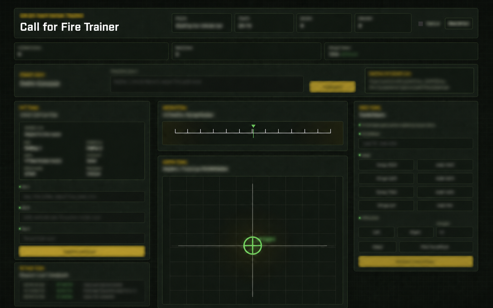

A private training aid designed to make structured practice more repeatable when instructors could not personally guide every learner through every session.

Understand the training outcome first, or examine the interaction and feedback decisions used to build it.
The operator view centers the training problem: learners need a clear practice loop, immediate feedback, and a safe way to build familiarity without requiring an instructor beside every repetition.
The builder view examines how the interface guides attention: status establishes context, one primary input controls the practice loop, visual feedback explains the result, and operational details remain intentionally abstracted.
This project began with a practical bottleneck: there were not enough instructors available to personally guide every student through each repetition of a structured training exercise.
The result was a focused training aid that gives learners a consistent place to work through a scenario, receive feedback, and build confidence before returning to instructor-led practice. This portfolio view intentionally leaves out operational content and focuses on the design problem, interaction model, and learning experience.
Create useful repetitions without requiring an instructor to be present for every attempt.
Use clear states and feedback so learners can understand where they are in a practice cycle.
Keep the interface structured and focused so the learner can concentrate on the exercise.
Share the training concept and interaction design without publishing sensitive operational information.
The interface is organized around a simple loop: present a scenario, accept a structured response, provide a visual result, and surface the next useful correction. That rhythm turns instructor-dependent practice into a more repeatable self-guided experience while keeping instructor time available for higher-value coaching.
The dashboard snapshot uses a deliberate visual hierarchy: status at the top, primary input near the center of attention, and supporting context arranged around a central visualization. The portfolio image softens the details, but preserves the layout so the design intent is still visible.
The interface has to make the next action obvious without taking over the learner's attention.
Useful feedback is timely, legible, and tied to a clear next step.
A project can communicate its design problem and impact without exposing the details of the environment it supports.